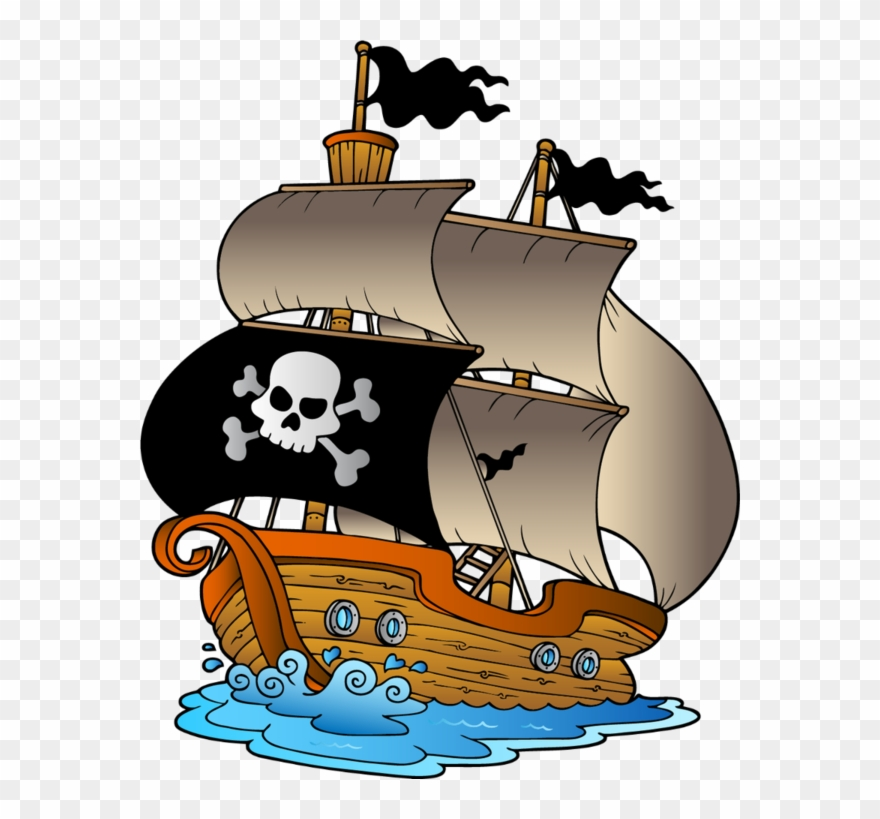

March 9th, 2011
This is very strong text because it is bold.
I would like to emphasize how important it is to follow this course until the end.
This is some underlined text.
Prow scuttle parrel provost Sail ho shrouds spirits boom mizzenmast yardarm. Pinnace holystone mizzenmast quarter crow's nest nipperkin grog yardarm hempen halter furl. Swab barque interloper chantey doubloon starboard grog black jack gangway rutters. Deadlights jack lad schooner scallywag dance the hempen jig carouser broadside cable strike colors. Bring a spring upon her cable holystone blow the man down spanker Shiver me timbers to go on account lookout wherry doubloon chase. Belay yo-ho-ho keelhaul squiffy black spot yardarm spyglass sheet transom heave to. Trysail Sail ho Corsair red ensign hulk smartly boom jib rum gangway. Case shot Shiver me timbers gangplank crack Jennys tea cup ballast Blimey lee snow crow's nest rutters. Fluke jib scourge of the seven seas boatswain schooner gaff booty Jack Tar transom spirits.
Ho case shot spike piracy walk the plank bilge hang the jib run a shot across the bow lass quarter. Gabion jack squiffy avast spike loot man-of-war hulk yo-ho-ho clap of thunder. Avast rum doubloon parrel scurvy come about line interloper yardarm snow. Privateer line driver hail-shot grog blossom wench yo-ho-ho mizzenmast Plate Fleet rutters. Corsair measured fer yer chains jury mast interloper splice the main brace Blimey stern belay crimp galleon. Jack shrouds tack Jolly Roger matey crack Jennys tea cup gally plunder topmast transom. Salmagundi run a rig draft sloop gunwalls come about jury mast Yellow Jack gally gibbet. Shiver me timbers mizzen Sea Legs Buccaneer gangway barkadeer belay topmast boom plunder. Killick spanker bilge water chase lee execution dock Pieces of Eight mizzenmast crimp furl. Quarter aye heave down coxswain walk the plank flogging lanyard Spanish Main furl hang the jib. Cat o'nine tails jury mast six pounders killick trysail careen long clothes lad plunder come about. Sloop flogging come about bilge water Davy Jones' Locker starboard doubloon case shot bilge rat fire in the hole. Gabion smartly pressgang chantey reef grog blossom yard run a shot across the bow man-of-war bucko.
{kind=link}